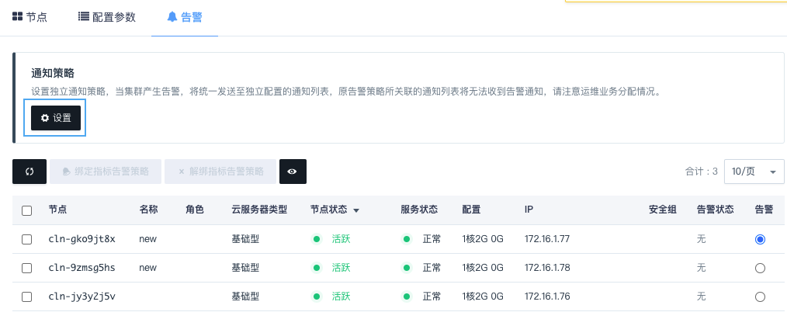
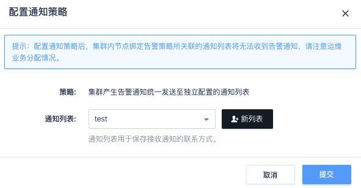
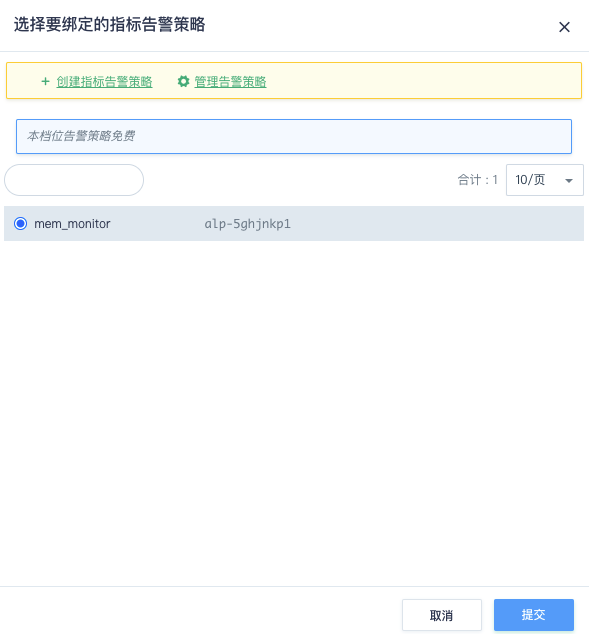
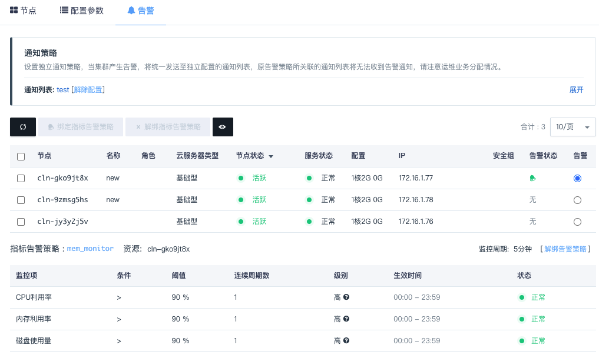

监控指标和告警
云数据库 Memcached 提供了强大的监控和告警功能，帮助用户更好的管理和维护运行中的 Memcached 缓存集群。
监控指标
Memcached 服务提供了详尽的监控数据，来帮助用户随时了解缓存服务的运行状态和各项指标。每一项监控都提供了历史监控和实时监控，最短时间间隔可以达到10s。Memcached 的监控数据是通过 Memcached 的 stats 命令来进行采集的。
| 监控项 | 间隔时间 | 单位 | 说明 |
|---|---|---|---|
| Get 操作 | 5分钟 | 次 | Get 相关操作的总数。 |
| Set 操作 | 5分钟 | 次 | Set 相关操作的总数。 |
| Delete 操作 | 5分钟 | 次 | Delete 相关操作的总数。 |
| Incr 操作 | 5分钟 | 次 | Incr 相关操作的总数。 |
| Decr 操作 | 5分钟 | 次 | Decr 相关操作的总数。 |
| Touch 操作 | 5分钟 | 次 | Touch 相关操作的总数。 |
| Cas 操作 | 5分钟 | 次 | Cas 相关操作的总数。 |
| Flush 操作 | 5分钟 | 次 | Flush 相关操作的总数。 |
| 命中率 | 5分钟 | % | 查询命中率，对应 get_hits / ( get_hits + get_misses )。 |
| 查询命中数 | 5分钟 | 次 | 查询的命中个数，对应 get_hits 字段。 |
| 查询未命中数 | 5分钟 | 次 | 查询的未命中个数，对应 get_misses 字段。 |
| 重用内存的 Key 个数 | 5分钟 | 次 | 缓存中使用召回内存的 Key 个数，对应 reclaimed 字段。 |
| 过期的 Key个 数 | 5分钟 | 次 | 缓存中被拒绝 Key 个数，对应 evictions 字段。当缓存内存不足时，会根据 LRU 算法来删除一些 Key。 |
| 当前连接数 | 5分钟 | 次 | 活跃的连接数，对应 curr_connections 字段。 |
| CPU | 5分钟 | % | 资源 CPU 使用率。 |
| 内存 | 5分钟 | % | 资源内存使用率。 |
| 硬盘使用率 | 5分钟 | % | 资源硬盘使用率。 |
| 硬盘 IOPS | 5分钟 | 次 | 资源硬盘 IOPS 次数。 |
| 硬盘吞吐量 | 5分钟 | MB/秒 | 资源硬盘读写速率。 |
监控告警
设置通知策略
设置独立通知策略，当集群产生告警，将统一发送至独立配置的通知列表。
注意：
- 设置通知策略后，节点绑定的指标告警策略所关联的通知列表，将无法收到告警通知，请注意运维业务分配情况。
-
在集群管理页面，点击集群 ID，进入集群详情页面。
-
在告警页签，点击通知策略模块下设置。

-
在弹出的通知策略配置窗口，选择通知策略，并点击提交。

-
返回告警页签，查看配置的独立通知策略。
绑定指标告警策略
云数据库 Memcached 支持对每个缓存节点配置指标告警策略。当业务发生异常时，会触发用户设定的告警阈值，并发送短信或邮件通知用户。
目前支持的指标告警规则有 CPU 利用率、内存使用率、磁盘使用量、已过期 Key 个数和节点服务状态。
-
在集群管理页面，点击集群 ID，进入集群详情页面。
-
在告警页签，选择节点，点击列表上方绑定指标告警策略。
-
在弹出的指标告警策略配置窗口，选择指标告警策略，并点击提交。
更多告警策略配置说明，请参见告警服务。

-
返回告警页签，选中已绑定指标告警策略节点，可查看配置的指标和告警历史。
